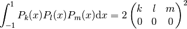

Spherical Harmonics¶
Are defined by

where  are associated Legendre polynomials defined by
are associated Legendre polynomials defined by

and  are Legendre polynomials defined by the formula
are Legendre polynomials defined by the formula
![P_l(x)={1\over2^l l!}{\d^l\over\d x^l}[(x^2-1)^l]](../../_images/math/9d4375f23c92f4a73c90f97bbc1430f727daae3a.png)
they also obey the completeness relation
(1)
and orthogonality relation:

The spherical harmonics are ortonormal:
(2)
and complete (both in the  -subspace and the whole space):
-subspace and the whole space):
(3)
(4)
The relation (3) is a special case of an addition theorem for spherical harmonics
(5)
where  is the angle between the unit vectors given by
is the angle between the unit vectors given by  and
and  :
:

Relations between complex conjugates is:

Examples¶

Gaunt Coefficients¶
We use the Wigner-Eckart theorem:

Where:

In order to calculate the reduced matrix element  , we
evaluate the W-E theorem for
, we
evaluate the W-E theorem for  :
:

and also evaluate the left hand side explicitly:

where we used:

Comparing these two results, we get:

and finally:
![\int Y_{jm}^*(\Omega) Y_{kq}(\Omega) Y_{j'm'}(\Omega) \d \Omega =
=\braket{j m | T^k_q | j' m'} = (-1)^{j-m}
\begin{pmatrix} j & k & j' \\ -m & q & m' \end{pmatrix}
(j || T^k || j') =
= (-1)^{j-m}
\begin{pmatrix} j & k & j' \\ -m & q & m' \end{pmatrix}
(-1)^{-j}
\sqrt{(2j+1)(2k+1)(2j'+1)\over 4\pi}
\begin{pmatrix} j & k & j' \\ 0 & 0 & 0 \end{pmatrix} =
= (-1)^{-m}
\sqrt{(2j+1)(2k+1)(2j'+1)\over 4\pi}
\begin{pmatrix} j & k & j' \\ 0 & 0 & 0 \end{pmatrix}
\begin{pmatrix} j & k & j' \\ -m & q & m' \end{pmatrix}](../../_images/math/3017b7c5cbfaf1fc0e670c23b475e5405d72cdad.png)
In order to evaluate other integrals of spherical harmonics, we just use the above result, for example:
![\int Y_{l_1 m_1}(\Omega) Y_{l_2 m_2}(\Omega) Y_{l_3 m_3}(\Omega) \d\Omega =
=(-1)^{m_1}\int Y_{l_1 -m_1}^*(\Omega) Y_{l_2 m_2}(\Omega)
Y_{l_3 m_3}(\Omega) \d\Omega=
=(-1)^{m_1}
(-1)^{-(-m_1)}
\sqrt{(2l_1+1)(2l_2+1)(2l_3+1)\over 4\pi}
\begin{pmatrix} l_1 & l_2 & l_3 \\ 0 & 0 & 0 \end{pmatrix}
\begin{pmatrix} l_1 & l_2 & l_3 \\ -(-m_1) & m_2 & m_3 \end{pmatrix}=
= \sqrt{(2l_1+1)(2l_2+1)(2l_3+1)\over 4\pi}
\begin{pmatrix} l_1 & l_2 & l_3 \\ 0 & 0 & 0 \end{pmatrix}
\begin{pmatrix} l_1 & l_2 & l_3 \\ m_1 & m_2 & m_3 \end{pmatrix}](../../_images/math/b43fb7bc105bd36f6dbcd4ad5726a02bc94d7396.png)
This is the most symmetric relation. It is useful to incorporate
the selection rule  of the
of the  symbols into the formula
and we get:
symbols into the formula
and we get:

From the other selection rules of the symbols it follows, that
the  coefficients are nonzero only when:
coefficients are nonzero only when:

Examples¶

and

Wigner 3j Symbols¶
Relation between the Wigner symbols and Clebsch-Gordan coefficients:

They are nonzero only when:

They have lots of symmetries. The symbol is invariant for an even
permutation of columns:

For an odd permutation of columns it changes sign if  is an odd
integer:
is an odd
integer:

and the same if you change the sign of the second row: